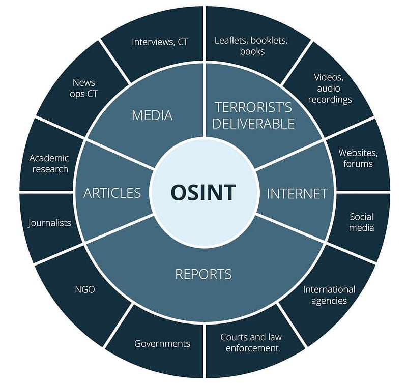

Institución: Universidad Politécnica de San Luis Potosí Materia: CNO V – Seguridad Informática Equipo:
Ávalos Rangel Hazel Mario – 181801
Cabrera Meza Jorge Alejandro – 181591
González Delgado Ángel Josué – 182837
López Castro Diego – 182032
López Monsiváis Jorge Emmanuel – 179842 Profesor: Mtro. Servando López Contreras Fecha de entrega: 15 – Mayo – 2026
Introducción
En un ecosistema digital donde el perímetro de seguridad es cada vez más difuso y
las capacidades ofensivas evolucionan a un ritmo sin precedentes, la integridad del
especialista en ciberseguridad se convierte en la última línea de defensa de una
organización. No basta con el dominio técnico de herramientas de monitoreo o la
ejecución impecable de un penetration test; el verdadero desafío radica en la gestión
de situaciones donde los límites legales, organizacionales y morales convergen en
zonas grises.
Este documento analiza de forma crítica diversos escenarios críticos, desde el
acceso no autorizado interno hasta el uso de inteligencia de fuentes abiertas
(OSINT), con el fin de evaluar la capacidad de toma de decisiones bajo presión,
garantizando que el ejercicio técnico no solo sea efectivo, sino también éticamente
intachable y alineado con los marcos normativos vigentes.
Marco teórico
La fundamentación de esta actividad se asienta en la intersección de la ética
aplicada y los estándares internacionales de seguridad de la información, como la
familia de normas ISO/IEC 27001, que dictan que la protección de activos debe
basarse en la gestión de riesgos y el cumplimiento legal. Un pilar axiológico central
son los "10 Mandamientos de la Ética Informática", creados en 1992 por el
Computer Ethics Institute (CEI) bajo la dirección del Dr. Ramon C. Barquin; este
decálogo actúa como un marco de referencia global para prevenir el sabotaje, el
espionaje y la falta de integridad en el manejo de datos.
Para contextualizar la toma de decisiones, es necesario comprender la tríada CIA
(Confidencialidad, Integridad y Disponibilidad), pues cualquier dilema ético suele
comprometer uno de estos vectores. El análisis se enriquece mediante tres lentes
filosóficos: la ética utilitarista, que busca el máximo beneficio técnico y social; el
enfoque de derechos, que salvaguarda la privacidad del usuario final frente al poder
del administrador de sistemas; y el bien común, que visualiza la ciberseguridad
como un componente esencial de la estabilidad democrática.
Finalmente, la clasificación de las conductas ilícitas es crucial para la
documentación pericial, diferenciando entre el delito informático, donde el software
o hardware es la víctima, el delito asistido por computadora, uso del sistema como
medio para el fraude o la extorsión, y el delito incidental, donde la tecnología facilita
la evidencia de un crimen tradicional, permitiendo así que el especialista justifique
sus acciones no solo mediante la técnica, sino bajo un criterio profesional sólido y
jurídicamente defendible.
Análisis de los escenarios
Escenario 01: Acceso no autorizado interno
"Trabajas en el área de ciberseguridad de una empresa. Durante una revisión de
logs detectas que un compañero accedió a correos privados del director general
sin autorización. El compañero argumenta que lo hizo para “detectar posibles
fugas de información"
1. El dilema ético
El conflicto radica en la colisión entre el deber de seguridad (detectar fugas) y el
derecho a la privacidad (correos del director). El compañero justifica una acción
intrusiva y no autorizada bajo una premisa de protección corporativa, planteando si
el "fin justifica los medios" en un entorno donde no se siguieron los protocolos de
auditoría formal.
2. Acción como especialista
Desde un punto de vista técnico y de cumplimiento, mi deber es reportar el incidente
de inmediato a la dirección de Seguridad de la Información (CISO) y a Recursos
Humanos. Procedería a asegurar los logs de acceso para evitar que sean alterados
por el compañero y abriría una cadena de custodia sobre la evidencia del acceso
no autorizado, ya que una investigación legítima debe estar precedida por una orden
formal y, a menudo, la presencia de un representante legal o de cumplimiento.
3. Justificación desde marcos éticos
A) Ética Utilitarista: El acceso no autorizado genera más daño que
beneficio. Aunque se "busquen" fugas, la pérdida de confianza en el
departamento de ciberseguridad y el riesgo legal para la empresa superan
cualquier hallazgo hipotético. La seguridad se basa en procesos, no en
vigilantes independientes. B) Enfoque de derechos: Se viola el derecho fundamental a la privacidad
de las comunicaciones del Director General. Como especialista, mi deber es
proteger estos derechos frente a intrusiones, incluso si provienen de
"aliados". C) Enfoque del bien común: La integridad de la organización depende de
que todos respeten las reglas establecidas. Si se permite que un técnico
acceda a correos privados por criterio propio, se rompe el orden institucional
y el clima de seguridad colectiva.
4. Mandamientos de ética informática
Se viola el mandamiento: "No indagarás en los archivos ajenos". Aunque el
compañero argumente fines de seguridad, la falta de autorización convierte su
acción en una intrusión ilegítima.
5. Clasificación del delito
Delito informático: Se trata de un acceso ilícito a sistemas de tratamiento
de información, tipificado como una vulneración a la confidencialidad de los
datos.
Escenario 02: Vulnerabilidad crítica no reportada
"Durante un pentest encuentras una vulnerabilidad crítica en un sistema financiero
que permite extraer dinero. El cliente aún no ha firmado el contrato final y tú sabes
que podrías explotarla sin ser detectado"
1. El dilema ético
El dilema es el conflicto entre la integridad profesional y legal frente al beneficio
económico personal. Existe la tentación de aprovechar un vacío administrativo (falta
de firma de contrato) y una debilidad técnica para cometer un robo que,
teóricamente, no dejaría rastro.
2. Acción como especialista
Como profesional ético, mi acción debe ser la transparencia absoluta. Documentaría
la vulnerabilidad de inmediato en un reporte preliminar y la comunicaría al cliente
con carácter de urgencia bajo un acuerdo de confidencialidad (NDA), incluso si el
contrato final no está firmado. Mi valor profesional reside en mi capacidad de
encontrar fallos para corregirlos, no para explotarlos. La confianza del cliente es el
activo más valioso en un pentest.
3. Justificación desde marcos éticos
A) Ética Utilitarista: El robo de dinero causaría un perjuicio económico
directo a los usuarios y a la entidad financiera, además de que, de ser
descubierto, mi carrera y la reputación de la industria de la ciberseguridad
quedarían destruidas. El beneficio de reportar (seguridad para miles) supera
el beneficio individual de robar.
B) Enfoque de derechos: La entidad financiera y sus clientes tienen derecho
a la propiedad privada y a la seguridad de sus activos. Explotar la falla es
una violación directa de estos derechos. C) Enfoque del bien común: Un sistema financiero estable y seguro es un
bien público. Al reportar la falla, fortalezco la infraestructura en la que confía
la sociedad para sus transacciones diarias.
4. Mandamientos de ética informática
Se violan (en caso de explotarla): "No usarás una computadora para robar" y
"No usarás una computadora para dar falso testimonio" (al ocultar el hallazgo
en el reporte para beneficio propio).
5. Clasificación del delito
Delito informático: Sería un fraude informático o transferencia no
consentida de activos, donde el sistema informático es el medio y el fin para
la ejecución del delito.
Escenario 03: Uso de herramientas OSINT
"Estás investigando a una persona sospechosa de fraude. Encuentras información
personal (dirección, familia, hábitos) en fuentes abiertas. Tu superior te pide usar
esa información para presionarlo psicológicamente"
1. El dilema ético
El conflicto se presenta entre la obediencia jerárquica y el uso profesional de la
información. Aunque la información se obtuvo de fuentes abiertas de manera legal,
el dilema surge al decidir si es ético utilizar datos personales sensibles (familia,
hábitos) para realizar acoso o presión psicológica, lo cual se aleja de una
investigación forense objetiva.
2. Acción como especialista
Me negaría rotundamente a realizar la presión psicológica. Técnicamente,
entregaría un informe basado únicamente en hechos y evidencia relacionada con el
fraude. Argumentaría ante mi superior que el uso de tácticas de presión personal no
solo es poco ético, sino que puede invalidar el proceso judicial posterior por
coacción o acoso, dañando la legalidad de la investigación.
3. Justificación desde marcos éticos
A) Ética Utilitarista: El uso de tácticas de presión puede traer resultados
rápidos, pero genera un riesgo legal inmenso para la empresa y puede
destruir la vida de personas inocentes (familiares del sospechoso) que no
tienen relación con el fraude.
B) Enfoque de derechos: El sospechoso, a pesar de su situación, conserva
el derecho a la dignidad y a que su familia no sea instrumentalizada como
herramienta de extorsión. C) Enfoque del bien común: La justicia debe impartirse a través del debido
proceso. Permitir que los investigadores actúen como "extorsionadores"
degrada la confianza social en las instituciones y en las herramientas
tecnológicas.
4. Mandamientos de ética informática
Se respeta la obtención de información (si es pública), pero se violaría el
mandamiento: "No usarás una computadora para dañar a otros" si se utiliza
dicha información para el acoso.
5. Clasificación del delito
Delito informático: El uso de información obtenida mediante
herramientas digitales para realizar una extorsión o acoso psicológico
convierte a la tecnología en el facilitador de un delito de carácter personal y
conductual.

Conclusión y reflexión técnica del estudiante
La resolución de esta actividad permite concluir que en el ámbito de la
ciberseguridad, el conocimiento técnico es una herramienta de doble filo que exige
una brújula moral robusta para evitar su abuso. A través del análisis de los
escenarios de acceso no autorizado, vulnerabilidades no reportadas y el uso de
técnicas OSINT, se hace evidente que el profesional de seguridad no solo debe ser
un experto en la detección de amenazas, sino también un custodio de la ética
organizacional.
El aprendizaje fundamental radica en que ninguna acción técnica ocurre en un
vacío; cada decisión debe ser filtrada por los 10 Mandamientos de la Ética
Informática y evaluada bajo enfoques como el utilitarismo y el bien común para
garantizar que la búsqueda de la seguridad no vulnere los derechos fundamentales
de las personas. En última instancia, la integridad de un sistema es tan fuerte como
la integridad ética de quienes lo administran, reafirmando que la excelencia en
ciberseguridad se alcanza cuando el rigor técnico y la responsabilidad moral
convergen para proteger el ecosistema digital de manera justa y legal.
Video
La Etica en Ciberseguridad: Más Allá de las Máquinas - byte_shield
International Organization for Standardization. (2022). Information security,
cybersecurity and privacy protection — Information security management systems
— Requirements (ISO/IEC Standard No. 27001). https://www.iso.org/standard/27001
Nacional Institute of Standards and Technology. (2024). The NIST Cybersecurity
Framework (CSF) 2.0. U.S. Department of Commerce.
https://www.nist.gov/cyberframework